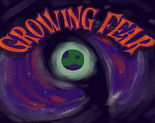
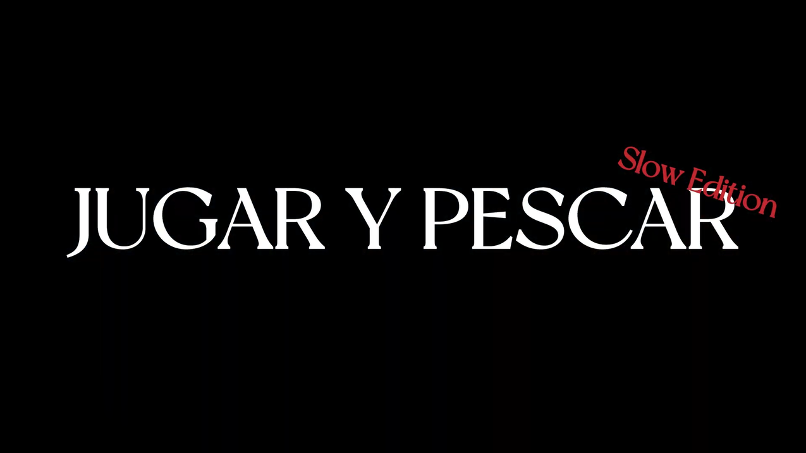
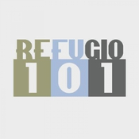
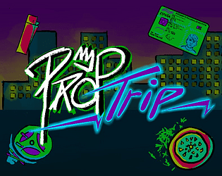
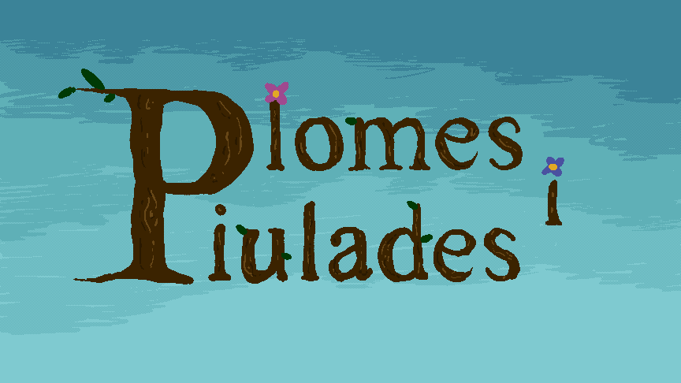
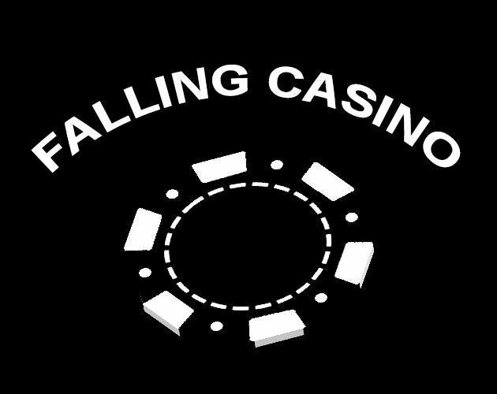

marmaestro momparler
I'm a video game design and development student that loves to learn, create, and teach.
My passions are video games and music, I'm trying to work on both of them in the future. My dream specialization is creative programming at engine level.
I make games for university and with my friends, along with other kinds of creative projects.
Projects
Growing Fear (Jam edition)
 Game JamFarming resource management game about growing scary plants to scare the citizens of a planet. Because your boss Cthulhu said so.
Made for the UJI Game Jam 2023 (Spooky Edition) with the theme "Spread the fear".
Game designer, 2D art director, narrative assistant, 3D art assistant
Jugar y Pescar (Slow Edition)
 DocumentaryShort documentary about slow gaming and fishing in video games. Made in collaboration with LABCOM UJI.
Host, co-director, editing assistant, writer, co-producer
Refugio 101
 OthersRadio programme in Spanish surrounding video games. News, essays, and reviews weekly. March 2023 - June 2025.
Most of my relevant work for this is in the essays page. They have not been translated yet.
Director, editor, co-host
Prop Trip (Jam edition)
 Game JamFirst-person high-speed shooter and platformer.
Made for the UJI Game Jam 2024 with the theme "Anything is a weapon".
3D art director, game designer, narrative assistant
Plomes i Piulades
 Game JamPuzzle game about birds and objects.
Made for the Anima Valencia Game Jam 2024 with the theme "Webs".
Programmer, game designer
Falling Casino
 Game JamA 3D godot game about stacking chips and fitting through holes. Inspired as a project for 1-BIT JAM #4.
Solo project